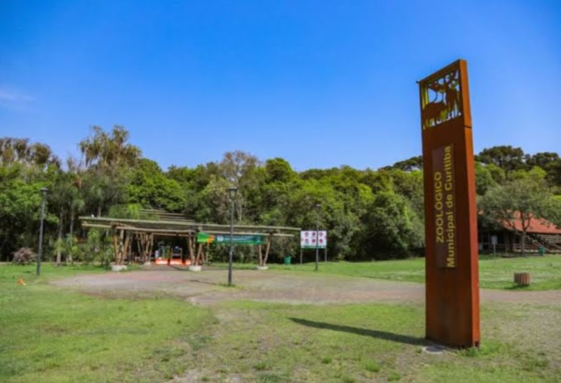
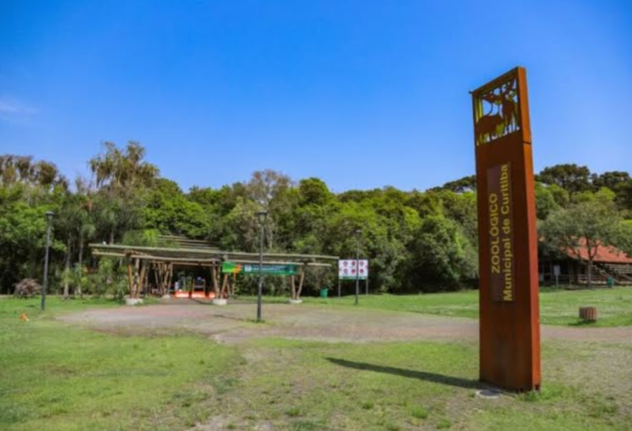
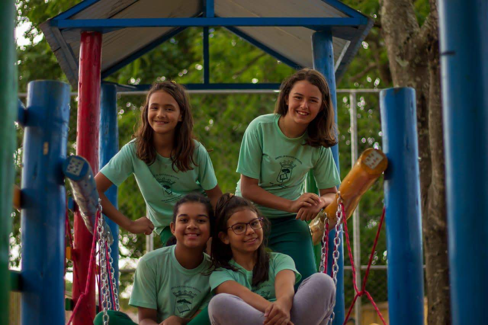
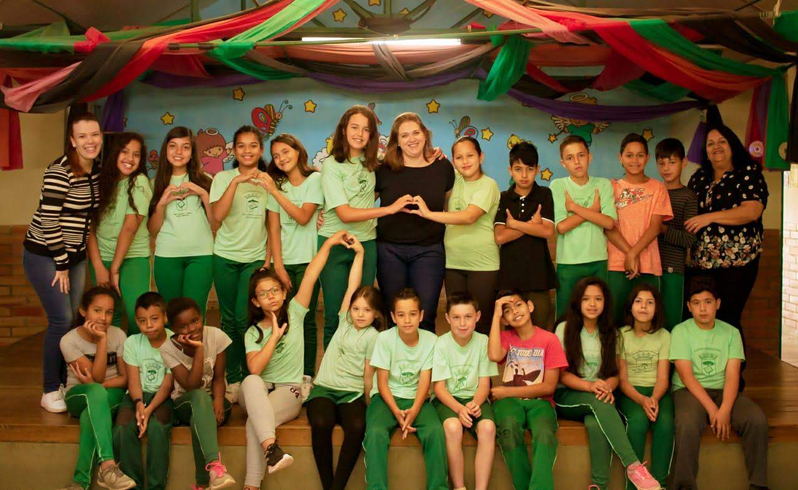
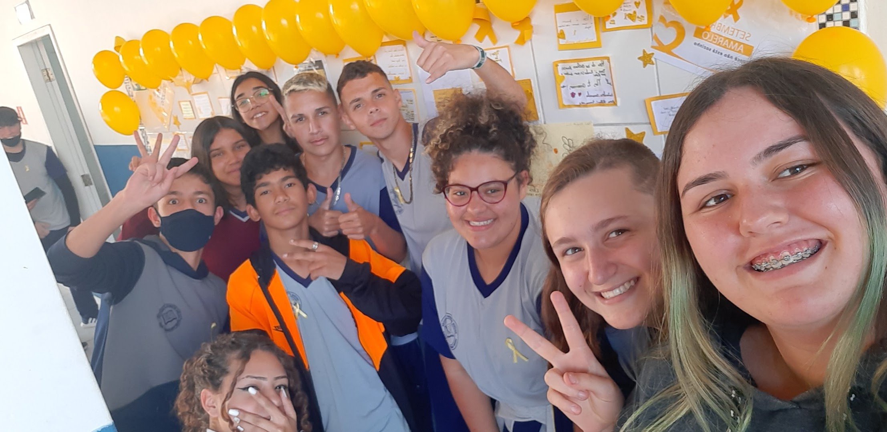
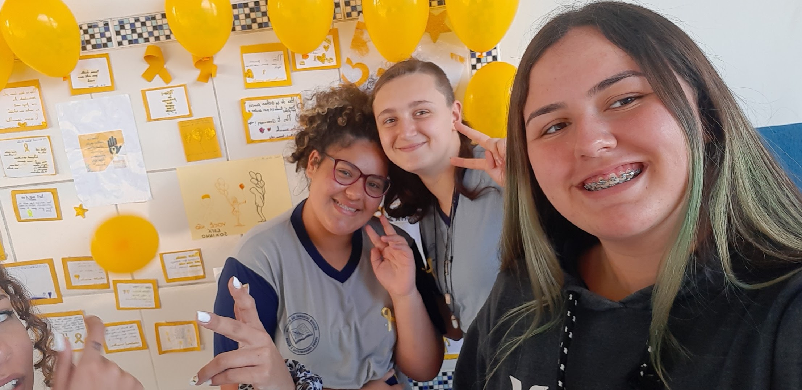

Passeio no zoológico
Data:23 de maio de 2013-1ºano A
.jpg) 

Nesta excursão, nós fomos para o zoológico de curitiba. Essa faze nós estavamos aprendemos sobre diversas coisas e uma das pricipais era sobre os animais domesticos e não domesticos.Tenho uma ótima memória sobre esse passeio, visitamos diversos habitat onde aprendemos como eles vivem, mesmo estando em jaulas, O zoológico faz o máximo de esforço para deixar as jaulas confortaveis para os animais viverem.
Cessão de fotos de formatura
Data: 8 de novembro de 2017-5ºano A

Que dia incrivel esse, tiramos diversas fotos para a formatura do 5 ano. Foi um dia muito especial, porem muito triste, nesse dia caiu a ficha que nós estavamos saindo da nossa zona de conforto e indo para um lugar totalmente diferente com pessoas estranhas. Mas com certeza todos nós encaramos essas dificuldades.A formatura foi um momento emocionante. Celebramos as conquistas e nos despedimos de uma fase importante de nossas vidas.
Trabalho da turma sobre o setembro amarelo
Data: 22 de setembro de 2022-9ºano A

Esse periodo fui um periodo muito importante pois todos estavamos a voltar nossas atividades após uma pandemia global. Esse foi um dos primeiros projetos que fizemos pós pandemia. Neste projeto nós falamos sobre a importancia da vida, esse é o significado do setembro amarelo. Todos nós lutamos em prol a vida.